Chapter 2 · Part 2 — Rattlesnake Flats
It was coiled up and rattling.
Jack took one look at the snake and ran. Annie ran, too. They ran past the graveyard and right into the ghost town.
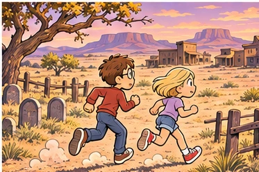
“I guess that’s why this town is called Rattlesnake Flats,” said Annie when they stopped.
Jack looked around. The town was hardly big enough to call a town. There was one unpaved street and a few old buildings.
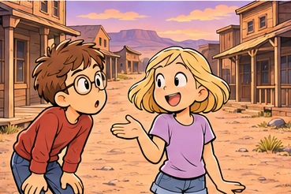
It was quiet, too quiet.
“Look, a store,” said Annie.
She pointed to a building. The faded sign said GENERAL STORE. “Let’s look inside. Maybe the answer to the riddle is in there.”
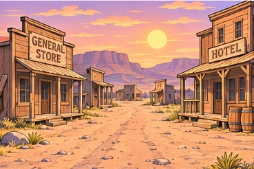
Jack and Annie stepped onto the porch. The wooden boards creaked loudly. The door had fallen off its hinges. They peeked inside.
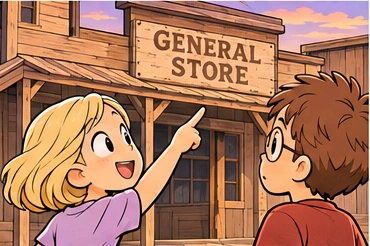
The air was thick with dust. Spider webs hung from the ceiling.
“Maybe we shouldn’t go in,” said Jack.
“But what if the answer’s here?” said Annie. “Let’s just take a quick look.”
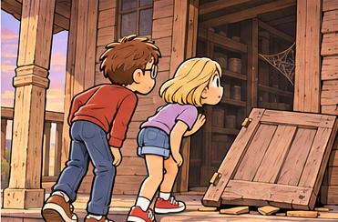
Jack took a deep breath. “Okay.”
He and Annie tiptoed into the store.
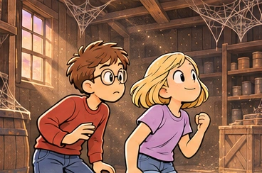
“Look,” said Annie. She picked up a pair of rusty spurs.
“Careful,” said Jack. He poked at other stuff in the store—an old feed sack, a rusted tin cup, a faded calendar dated 1878.
“Oh, wow,” said Annie. She held up two cowboy hats. She put one on and handed the other one to Jack. “For you.”
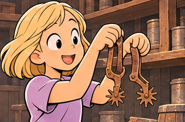
“It’s too dusty,” said Jack.
“Just blow on it,” said Annie.
Jack blew on his hat. A cloud of dust rose up. Jack sneezed.
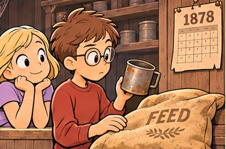
“Just try it on!” said Annie.
Jack put the hat on. It nearly covered his eyes.
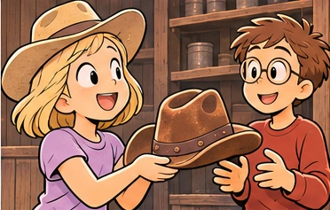
“Boots!” said Annie. She pointed to a row of cowboy boots on a shelf. “There are even some small ones, like our sizes. Here’s a pair for you.” She handed the boots to Jack.
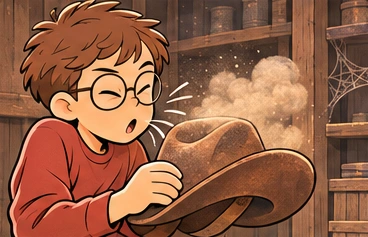
“They’re not ours,” he said.
“I know, but just try them on,” said Annie.
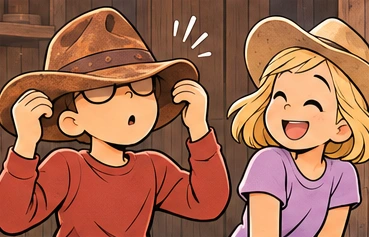
Jack turned his boots upside down and shook them as hard as he could.
“What are you doing?” Annie asked, pulling on another pair of boots.
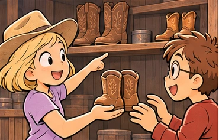
“Checking for scorpions,” Jack said.
“Ja-ack.” Annie laughed. “Try them on!”
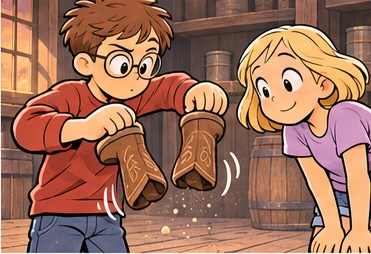
Jack sighed. He pulled off his sneakers. He pushed his feet into the boots. He pushed and pushed. The boots were really stiff. Finally he got his feet inside. Then he tried to walk.
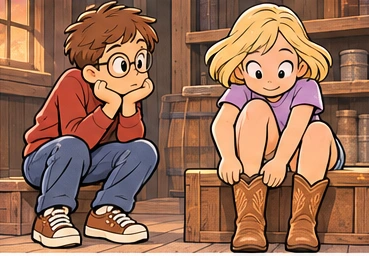
“Owww!” he said. “Forget it.” He started to pull off the boots.
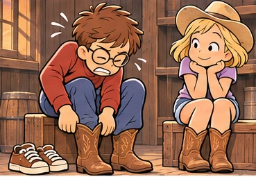
“What’s that?” Annie said.
Jack froze.
“Piano music,” said Annie. “Maybe it’s the voice in the riddle! Come on!”
Jack threw his sneakers into his backpack and hobbled after Annie.
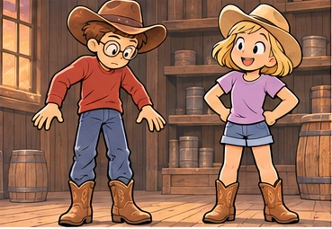